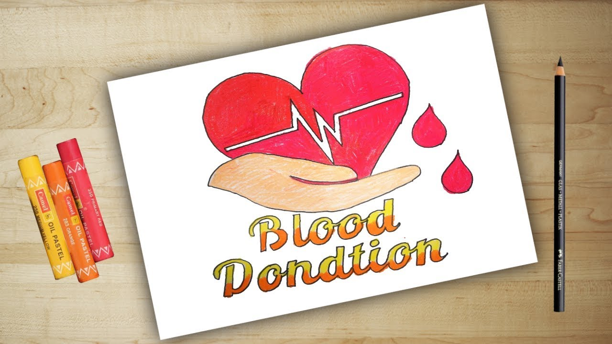
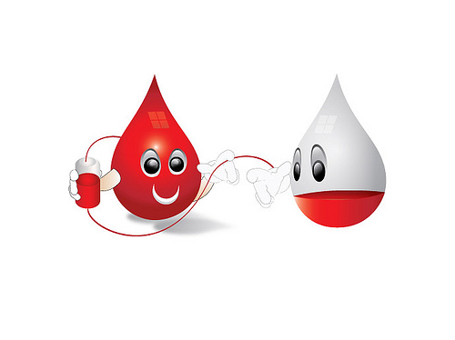
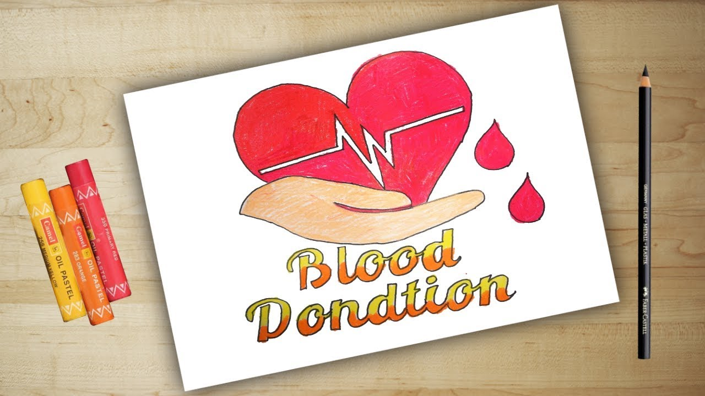
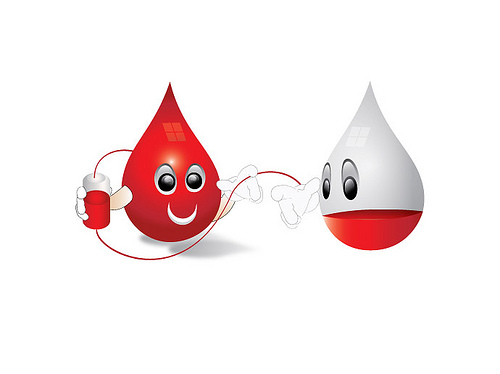

Blood types are determined by the presence or absence of certain antigens – substances that can trigger an immune response if they are foreign to the body. Since some antigens can trigger a patient's immune system to attack the transfused blood, safe blood transfusions depend on careful blood typing and cross-matching.
There are four major blood groups determined by the presence or absence of two antigens – A and B – on the surface of red blood cells. In addition to the A and B antigens, there is a protein called the Rh factor, which can be either present (+) or absent (–), creating the 8 most common blood types (A+, A-, B+, B-, O+, O-, AB+, AB-).
There are more than 600 other known antigens, the presence or absence of which creates "rare blood types." Certain blood types are unique to specific ethnic or racial groups. That’s why an African-American blood donation may be the best hope for the needs of patients with sickle cell disease, many of whom are of African descent. Learn more about blood and diversity.
There are very specific ways in which blood types must be matched for a safe transfusion. Use the interactive graphic below to learn more about matching blood types for transfusions.
Also, Rh-negative blood is given to Rh-negative patients, and Rh-positive or Rh-negative blood may be given to Rh-positive patients. The rules for plasma are the reverse.
O positive is the most common blood type. Different ethnic and racial groups have different frequency of the main blood types in their populations. Approximately 45 percent of Caucasians are type O.
Type O is routinely in short supply and in high demand by hospitals – both because it is the most common blood type and because type O negative blood, in particular, is the universal blood type needed for emergency transfusions. Minority and diverse populations, therefore, play a critical role in meeting the constant need for blood.